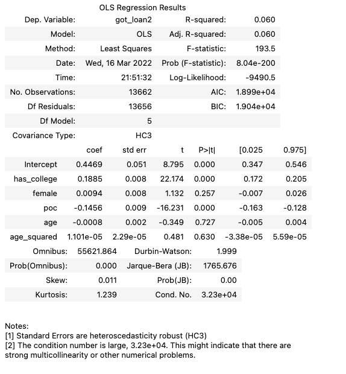
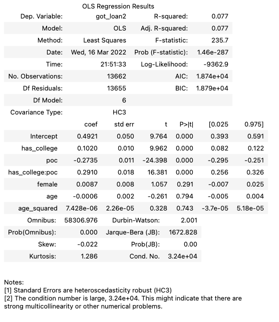

Unifying Data Science Mid-Term 2022¶
Hello, and welcome to the multiple choice portion of the UDS 2022 midterm! I know this doesn’t feel exciting, but I hope you find this a useful opportunity to practice applying all the knowledge you’ve gained about causal inference over the course of the semester.
Causal Inference Fundamentals¶
Question 1¶
You are sitting in a meeting listening to a presentation to management by a colleague from the advertising department. In the presentation, your colleague is arguing that their model shows that if your non-profit—Let’s Bring Back the Dinosaurs—were to advertise on bus stop benches, it would increase donations to your project by 30%, radically increasing funding for your project to genetically modify reptile embryos by splicing them with remnant DNA found in mosquitos encased in amber, because that could never end badly.
As you watch the presentation, another colleague asks the presenter how they know that their model is giving a valid causal estimate of the likely effect of bus bench advertising. The presenter explains that:
“We got data on donations to other non-profts and their advertising strategies, then used the estimate_effect method from the DoWhy: An end-to-end library for causal inference package’s dowhy.causal_estimators module [yes, this is a real thing]. Then we read off the”average treatment effect”. The package is from Microsoft, so we think it’s trustworthy! Plus it passed the robustness tests in the package, so we know it’s a valid estimate.”
What response seems most appropriate in this context?
☐ Mild skepticism. While it sounds like the team did some good work and knows what they’re doing, the only real way to get a good causal estimate is with randomization, so we should probably do more research.
☐ Excitement! It’s great to hear that someone has finally developed a package to automate the process of causal inference so that it can become systematized in the same way scikit-learn has systematized machine learning.
☐ Optimism! It really sounds like this team did their homework, and now we’ll be able to raise more money so I can finally get a pet Chaoyangsaurus!
[X] Deep skepticism. You know that there are no statistical tests that can tell us with certainty whether any causal estimate is valid. That’s because the fundamental problem of causal inference is that we can never directly observe both an outcome under treatment and its counter-factual (outcome without treatment) for the same unit of observation at the same moment in time. Since we would have to observe both an outcome and its counterfactual to be certain of the causal effect of any treatment, this means we can never be absolutely certain of our causal inferences. The best we can do is look for stand-ins we think approximate the counter-factual condition (the outcome we don’t see) and use those to make inferences. But because we can never see this counter-factual, we can’t ever directly measure whether we have approximated it correctly, and thus must always rely on case knowledge to argue for whether our causal estimate if valid.
Question 2¶
A random sample of American lenders were shown applications from a set of entrepreneurs looking to get small business loans. All entrepreneurs had strong credit histories. Those responses—1 if the lender said they would lend to an applicant, 0 if not—were then regressed on attributes of the loan applicant. The result of that regression is this table:
has_college, female, and poc are indicators for whether the applicant has a college degree, is female, and identifies as a “Person of Color” respectively, and take a value of 1 if the applicant meets the condition.
Does this regression table show that there is a causal effect of having a college degree on whether bankers are willing to provide a loan to an entrepreneur?
☐ Yes: the coefficient on
has_collegeis large (the average loan rate was around 45%, and having a college degree increases the likelihood of approval by almost +20%); the coefficient is very statistically significant (t-stat is over 22!); and lenders were randomly selected. So we can conclude that having a college degree has a very large causal effect on lender behavior in the US.☐ No, while there are some controls in the regression, there were probably lots of other things in the applications that were different for applicants with and without college degrees.
☐ No, the R-squared on this model is so low, we really can’t infer anything.
[X] I really can’t say based on the information I have been provided. I would need to know more about the applications and how lenders were approached to answer that question.
Question 3¶
Now suppose I told you that the applications that the lenders saw were a random sample of real small business applications, and that the only features on the application were the applicant’s age, gender, race, and educational attainment.
Now would you say that the table shows that there is a causal effect of being having a college degree on whether lenders are willing to lend to an applicant?
☐ No: since the having a college degree was not randomly assigned, the coefficient on
has_collegeis not a valid causal estimate; it’s just a correlation.☐ Yes: the coefficient on
has_collegeis large; the coefficient is very statistically significant; and landlords were randomly selected. So we can conclude that having a college degree applicant has a very large causal effect on landlord behavior in the US.[X] Probably yes: even though having a college degree was not randomly assigned, we have been able to measure all features on the application, meaning that even if applicants with and without college degrees are not the same on average, our model can adjust for those average differences. Thus given the magnitude and statistical significance of the coefficient, and the fact lenders were randomly selected, it is probably the case that that having a college degree has a very large causal effect on lenders behavior in the US. But to be sure, I would want to run some additional diagnostic tests on the model to ensure that I have specified the model correctly.
☐ I really can’t say based on the information I’ve been provided. I would need to know more.
Question 4¶
Now suppose I told you that the applications that the lenders saw were a random sample of real small business applications that included the applicants age, gender, race, educational attainment, employment history, criminal record, as well as personal statement and business plans.
Now would you say that the table shows that there is a causal effect of having a college degree on whether lenders are willing to lend to an applicant?
☐ No: since having a college degree was not randomly assigned, the coefficient on
has_collegeis not a valid causal estimate; it’s just a correlation.[X] No: since having a college degree of the applicant was not randomly assigned, and the applications for applicants with and without college degrees probably differed in ways that aren’t accounted for in our regression but which were correlated with education and matter to lenders (e.g. the college graduates may not have had better business plans), the coefficient on
has_collegeis likely subject to omitted variable bias and does not reflect the causal effect of having a college degree.☐ Yes: the coefficient on
has_collegeis large; the coefficient is very statistically significant; and lenders were randomly selected. Moreover, we are able to control for age, gender, and race, so we can conclude that having a college degree applicant has a large causal effect on lender behavior in the US.☐ I really can’t say based on the information I’ve been provided. I would need to know more.
Question 5¶
Now suppose I told you that the applications that the lenders saw were created by a researcher who assigned whether applicants would have a college degree on each application at random. Now would you say that the table shows that there is a causal effect of having a college degree on whether lenders are willing to rent to an applicant?
☐ Yes: having a college degree was randomly assigned on the applications; the coefficient on
has_collegeis large; the coefficient is very statistically significant; and lenders were randomly selected. So we can conclude that having a college degree applicant has a very large causal effect on lender behavior in the US.[X] Probably yes: If having a college degree was randomly assigned, then given the magnitude and statistical significance of the coefficient, and the fact lenders were randomly selected, then it is probably the case that that having a college degree has a very large causal effect on lender behavior in the US. But to be sure I would need to know more about exactly how the experiment was conducted to be sure that the randomization actually resulted in similar applications for college degree holders and non-degree holders, and that there were no unintended spillover or context effects.
☐ No: there were probably still differences between the college degree holders’ applications and those of non-college degree holders.
☐ I really can’t say based on the information I’ve been provided. I would need to know more
Question 6¶
You just looked at a single regression table and, in different questions, came to different conclusions about the causal meaning of the coefficient on having a college degree. What does this illustrate about the discipline of causal inference?
Acceptable Answers:
This one is kinda a gimmie. I mostly want students to pause and reflect, and then hopefully say about the fact that whether a model is providing a causal estimate is a function of anything in the data or any statistical test; it depends on how the research was conducted, how treatment was assigned, and on untestable assumptions that can only really be evaluated using case knowledge. And that the exact same regression result may be giving us a causal effect or not, depending on how the underlying data was created.
Question 7¶
Now consider this specification from the context studied in Question 5.
Based only on the information in this table, do you think a lender is more likely to give a loan to a White applicant with a college degree, or a Person of Color with a college degree? (recall poc is an indicator for identifying as a Person of Color, e.g. non-White)
[] The White applicant with a college degree
[X] The Person of Color with a college degree
☐ I can’t say based on just the data you’ve provided.
The difference in the predicted values for a PoC college graduate and a White college graduate is ``0.29 - 0.27 = 0.02``. So it’s very close, but the POC by a hair.
A/B Testing¶
Question 8¶
When selecting the Overall Evaluation Criterion (OEC) to use in an A/B test, it is important to ensure that the OEC you pick has what two properties:
+1 for two correct answers, +0.5 for one correct answer, 0 for no correct answers.
☐ Changes in the OEC are uncorrelated with your guardrail metrics.
[X] Changes in the OEC are a good indicator of whether you are achieving your organization’s long-term goals.
☐ It is possible to randomly assign the OEC.
[X] There is enough short-run variation in the OEC that you can measure changes in the OEC in an experiment of reasonable length.
Question 9¶
When deciding on how long to run your experiment, which of the following is NOT a valid consideration / thing to do:
☐ I want to ensure it runs long enough I think I’ll have enough observations to detect the minimal effect that might impact my decision-making process (estimated using power calculations)
☐ It should run long enough to account for any “seasonality effects”, to the extent feasible (e.g. run for a full day, full week, full month, etc.).
[X] I want to schedule enough time to get a large sample size, but I can use a t-test / regression to compare average values of the OECs for the two groups as the data comes in watch for statistically significant p-values on my treatment to try and shorten the run time.
☐ If I want to measure primacy effects, I need the experiment to run long enough I can measure the first portion of the experiment and the last portion of the experiment separately.
☐ These are all valid considerations / things to do.
Question 10¶
List two actions you can take to evaluate/ensure the internal validity of an A/B test?
+1 for two correct answers, +0.5 for one correct answer, 0 for no correct answers. If they provide more than two (i.e. they’re are fishing), then score as above, but also take -0.5 for any incorrect answers)
Acceptable answers that come to mind immediately:
Run an A/A test
Check for balance in your samples
Check to see if your guardrail metrics change in a way you don’t think they should have given what you know about your experiment
If you get a result that’s really remarkable, remember Twyman’s Law and start from the assumption you screwed something up.
Question 11¶
You’re running an A/B test for an e-commerce website to test the effect of a newer generation of processor on user latency. You know from past data that higher latency tends to reduce sales, so you’re hoping that the chip will reduce latency enough to justify its higher cost. In particular, you know that the chip will pay for itself if it reduces latency by 2 milliseconds. Any change smaller than that (or god forbid an increase in latency!) and the chips aren’t worth the cost; any decreases in latency greater than 2 milliseconds and you start to make money. 2 milliseconds is the break-even point, but we’d be making an additional 500,000 dollars a year in profit if we got to 2.5 milliseconds.
Moreover, assume that changing chips is costly and hard to reverse (the cost in terms of parts and labor are taken into account in the math above, but the effort takes some time away from other things, so you want to avoid a change that won’t generate profits.) Given that, your team has determined that a p-value threshold of 0.035 is appropriate; choosing to roll out a change if you can’t reject the null with p < 0.035 is just too risky given the costs.
Suppose that after running the experiment, you find that (a) all your data suggests the experiment went well (everything you did in Question 9 looked good), and (b) you estimate that the chip reduces latency by 2.2 millisecond with a 96.5% confidence interval of +/- 1 millisecond. What would you recommend?
☐ We should not change to the new chips. We cannot reject the null hypothesis that the change is less than a 2 millisecond speed up at p < 0.035.
☐ We should change to the new chips. If the 96.5% confidence interval is +/- 1 millisecond, then we can’t reject the null that there’s a > 2 millisecond reduction in latency at p < 0.035. In fact, we can’t even reject the null that there’s a 3 millisecond speedup, which would be worth way over 500,000 dollars a year!
☐ Our standard errors and confidence intervals are too big to conclude much. We should really try and run another A/B test with more subjects to get much smaller standard errors, especially since the point estimate suggests we may indeed be able to make money, and the possibility of making lots of money is well within our confidence intervals. But if we can’t do another A/B test for some reason, then we should change to the new chips to try them out, since our point estimate is > 2 and our confidence intervals include values that might earn us hundreds of thousands of dollars a year.
[X] Our standard errors and confidence intervals are too big to conclude much. We should really try and run another A/B test with more subjects to get much smaller standard errors, especially since the point estimate suggests we may indeed be able to make money, and the possibility of making lots of money is well within our confidence intervals. But if we can’t do another A/B test for some reason, then we shouldn’t switch chips. The fact that it’d be hard to go back to the old chips if the new chips don’t work out (and we’d waste management energy) means that the change could be very costly if we’re wrong, and we’re nearly as likely to lose money as make money.
Causal Inference Beyond A/B Testing¶
Question 12¶
When our goal is to understand causal relationships, the main reason we use linear regressions with control variables when working with non-randomized data is primarily because…
☐ Control variables improve the statistical efficiency (reduce the standard errors) of our estimates of the causal effect we’re measuring.
[X] By controlling for differences between observations, we are trying to correct for any baseline differences between treated and untreated observations (i.e. we want to account for selection effects) and thus generate accurate estimates of causal effects.
☐ Including control variables allows us to compare our causal effect of interest to the causal effect of other factors in the same model.
☐ None of the above.